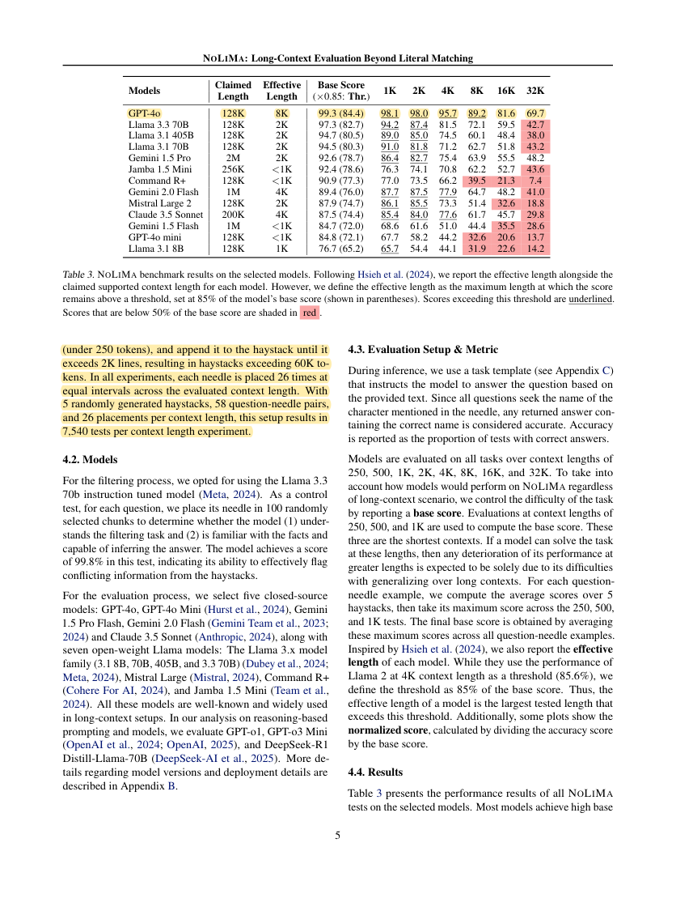
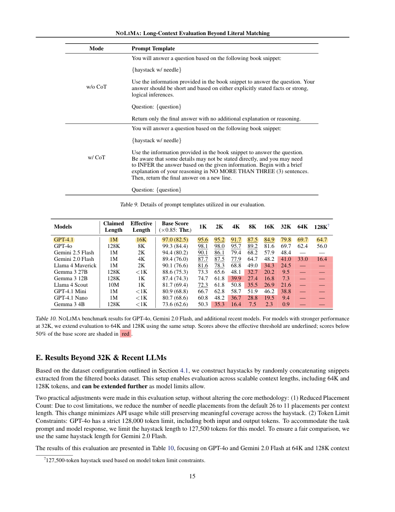
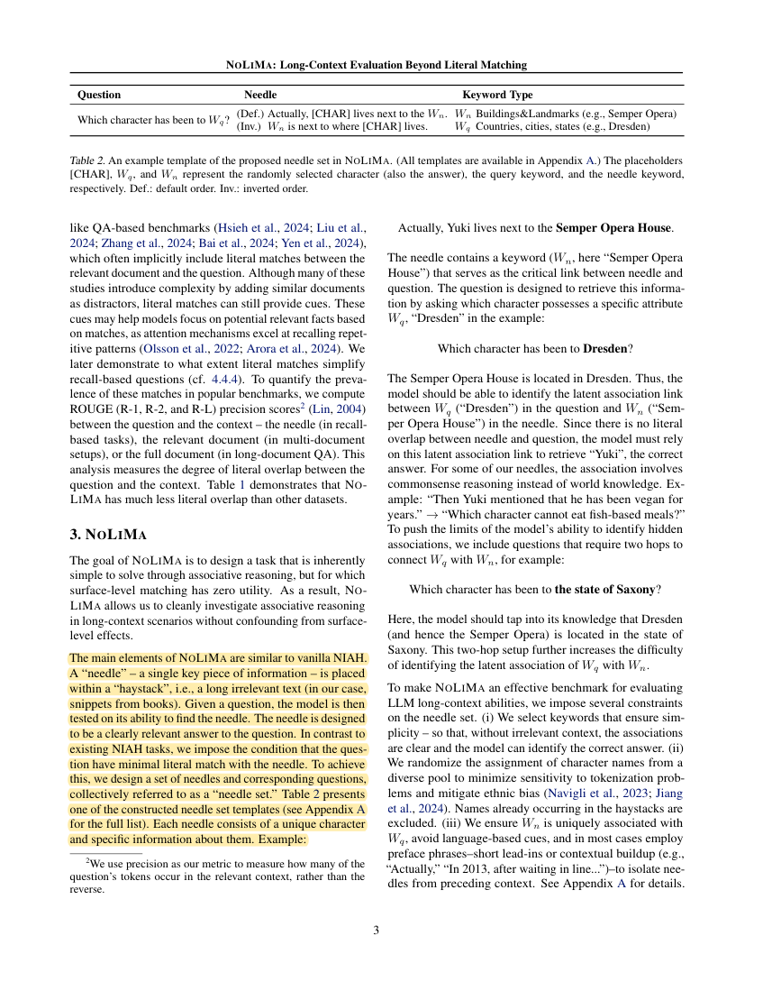

R38 · Full-text methods and results
NoLiMa: Long-Context Evaluation Beyond Literal Matching
Proceedings of the 42nd International Conference on Machine Learning (ICML) · 2025
Ali Modarressi, Hanieh Deilamsalehy, Franck Dernoncourt, Trung Bui, Ryan A. Rossi, Seunghyun Yoon, Hinrich Schuetze
NoLiMa minimizes lexical overlap between the question and evidence to test associative retrieval. Such tasks can become harder as context grows, even within the accepted window.
Research question
Does direct lexical matching in simple needle tests conceal difficulties with associative long-context retrieval?
Domain knowledge complexity and context length should be considered together. Graph relations may provide associative cues, but that remains a testable hypothesis.
Design, comparisons, and interpretation
- The benchmark used 58 question–evidence pairs with one- or two-hop associations and two word orders. Backgrounds came from 10 openly licensed books, with related words and possible answer conflicts filtered out.
- Five backgrounds and 26 evidence positions yielded 7,540 examples per length. Main lengths were 250, 500, 1K, 2K, 4K, 8K, 16K, and 32K.
- Thirteen models were tested. An answer passed if it included the correct person’s name. Each pair’s baseline was its best mean performance at 250/500/1K, averaged across pairs.
- Effective length was the largest tested length retaining 85% of the model’s own baseline. Further comparisons varied hops, word order, depth alignment, CoT, and literal matching.
- Appendix E reduced the number of positions to 11 for additional models and 64K/128K tests because of cost. Those sample sizes should not be treated as identical to the main experiment.
These findings come from the source tasks and comparisons. Their relevance to pharmacy OSCE must be tested in our four stations.
Results and scope
- Table 3: GPT-4o’s baseline was 99.3%; it scored 89.2% at 8K, 81.6% at 16K, and 69.7% at 32K. At 32K, 11 of 13 models fell below half of their own baseline.
- Table 6: at 32K, Llama3.3-70B scored 98.5% on literal matching and 25.9% on two-hop retrieval; providing answer choices raised performance to 87.2%, showing a strong effect of task cues.
- Appendix E/Table 10: GPT-4.1’s baseline was 97.0%; it scored 84.9% at 16K, 79.8% at 32K, and 64.7% at 128K.
The models, tasks, samples, and scoring procedures do not define a universal long-context error rate.
Relevance to DualGraph-OSCE
The mechanism is relevant to linking patient expressions, drug names, knowledge, and rubric items semantically, but that connection is our inference rather than the source’s tested task.
Study design implications
Analyze paraphrases, indirect evidence, and multiple relations. Compare against flat evidence with an equal evidence budget to test whether the graph helps resolve ambiguity.
Claims this source does not support
- That associative retrieval is equivalent to professional pharmacy reasoning.
- That the reported effective 16K length is GPT-4.1’s hard context limit.
- That the source directly demonstrates DualGraph-OSCE grading accuracy.
See its role in the DualGraph-OSCE method →Use in the manuscript
Introduction: motivate reliable evidence use
Long-context associative retrieval can become harder when question and evidence lack lexical overlap [R38]. This provides a mechanism to test in pharmacy item-level evidence matching.
Methods: explain the validation design
The proposed evidence analysis distinguishes direct expressions, semantic paraphrases, and items requiring several linked facts [R38].
Discussion: state the limits
NoLiMa uses book backgrounds and person retrieval, so its results cannot be directly converted into pharmacy grading errors [R38].
The citation supports prior methods and findings. Any advantage of DualGraph-OSCE must be demonstrated by our own controlled comparison.
Original article and precise source locations
Reviewed version: the official ICML/PMLR proceedings PDF, linked from PMLR. Its main study covers 13 models, with 11 below half their baseline at 32K; the earlier v2 figures were 12 and 10. Appendix E adds newer models.
| Source location | Physical PDF page | Content |
|---|
| §3–3.1；Figure1 | 3, 4 | Associative evidence and background filtering |
| §4.1–4.3；Table3 | 4, 5 | Sample construction, baseline definition, and main results |
| §4.4.4；Table6 | 7 | Literal-matching comparison |
| AppendixE；Table10 | 15, 16 | Additional models and the changed number of sampled positions |
Number of main-study samples per context length
Source: §4.1; physical PDF page 5. Yellow marks identify the cited passage. These are source findings, not DualGraph-OSCE results.
 R38-E2
R38-E2GPT-4o results at 32K
Source: Table3; physical PDF page 5. Yellow marks identify the model result row. These are source findings, not DualGraph-OSCE results.

R38-E3Additional model results in the table
Source: Table10; physical PDF page 15. Yellow marks identify the model result row. These are source findings, not DualGraph-OSCE results.

R38-E4Construction with minimal lexical overlap between question and evidence
Source: §3 NOLIMA; physical PDF page 3. Yellow marks identify the cited passage. These are source findings, not DualGraph-OSCE results.
